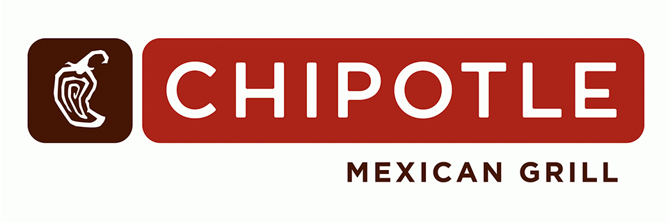

About
I am a data analyst with hands-on experience using structured datasets to uncover trends, measure KPIs, and support business decisions. My background includes SQL querying, exploratory data analysis, and building dashboards that communicate insights clearly to stakeholders.
Across academic and project work, I have analyzed sales performance, customer segmentation, operational trends, and classification problems. I focus on clean, reliable analysis—starting with data validation and preparation, then moving into insight generation and clear recommendations.
I am particularly interested in roles focused on product analytics, business intelligence, operational/support analytics, and healthcare data analytics.
Projects
Super Store
Analyzed the Superstore sales dataset from
Kaggle
to identify profitability drivers and areas of margin loss. I cleaned and explored the data to answer business questions related to product performance, regional trends, and discount impact. Insights were supported with clear visualizations and translated into recommendations to improve profitability and operational focus.
- Key Insight: Identified profit leakage tied to discounting and select product categories/regions.
- Recommendation: Refine discount strategy and prioritize higher-margin segments to improve profitability.
Skills and Concepts Demonstrated: Python, pandas, Matplotlib, Data Cleaning, Data Exploration, Data Analysis, Business Insights, Data Visualization
Explore Repository
NASA UAV Obstacle Avoidance Database Capstone Project
Built an obstacle avoidance database concept to support more autonomous drone delivery. The goal was to create a pipeline that could detect obstacles from LiDAR and satellite imagery, apply machine learning to classify objects, and store results in a database for ongoing updates. This project focused on data ingestion, preprocessing, feature representation, and modeling workflows to support safe, optimized flight paths.
Skills and Concepts Demonstrated: Python, NumPy, Trimesh, Plyfile, LasPy, pandas, Clustering, Data Segmentation, SQL Database, Google Cloud Virtual Machine, KPConv, TensorFlow, Keras, Machine Learning, Convolutional Neural Network, Data Modeling, YOLOv5, Roboflow, MapBox API, USGS, LiDAR
Project Team Members:
Kevin Brand
Mark Santos
Steven Zhu
Explore Repository

Chipotle Marketing Project
Analyzed Chipotle customer survey data to improve satisfaction and retention. I cleaned the dataset by handling missing values, standardizing responses, and correcting data quality issues. After preparation, I applied K-Means clustering to segment customers into distinct profiles based on survey responses. I interpreted cluster behaviors to identify what each segment valued most and recommended targeted strategies to improve retention. Findings were presented through a PowerPoint deck supported by visualizations.
Skills and Concepts Demonstrated: Python, NumPy, pandas, Matplotlib, K-Means Clustering, Data Cleaning and Exploration, Data Visualization, Microsoft Excel, Pivot Tables, PowerPoint, Feature Importance
Project Team Members:
Melanie He
Mark Santos
Steven Zhu
Explore Repository
SQL Social Media App Project
Designed a relational database for a simulated social media app (similar to Instagram) to answer real-world business questions around user activity and engagement. Created the schema, generated and inserted sample data, and wrote SQL queries to measure engagement metrics and behavioral trends. Results were summarized into recommendations and presented in a PowerPoint deck.
- Key Insight: Used SQL to quantify engagement patterns and identify top activity drivers.
- Recommendation: Proposed data-driven actions to improve retention and engagement based on usage trends.
Skills and Concepts Demonstrated: SQL, MySQL, Querying, PowerPoint, Data Mapping, Mockaroo for pseudo data, SQL Tables, Business Insights, Decision Making, Data Analysis, Relational Databases
Project Team Members:
Steven Zhu
Explore Repository